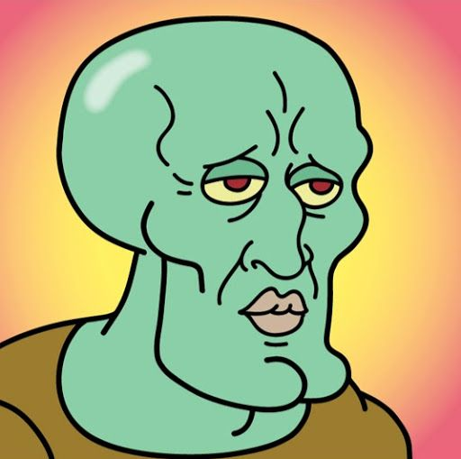
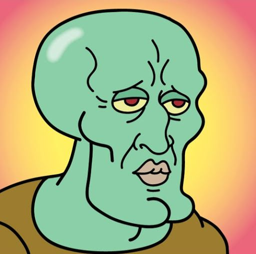
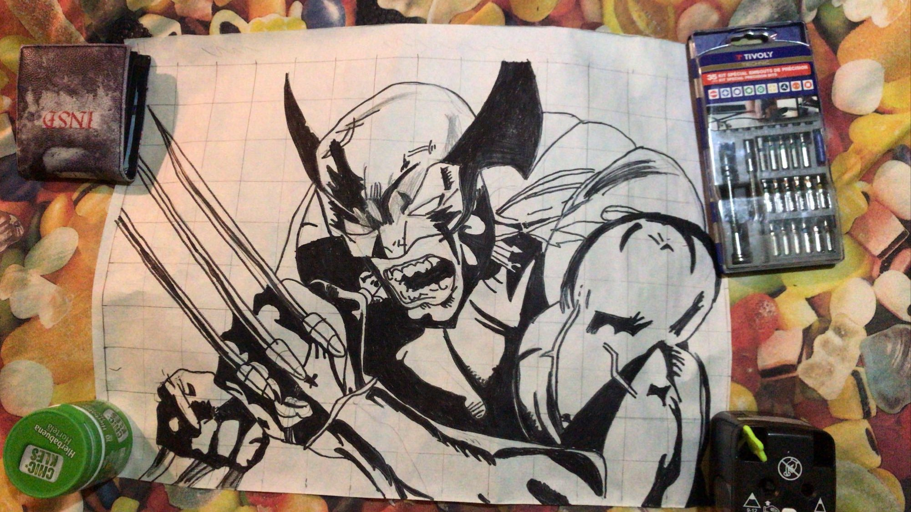
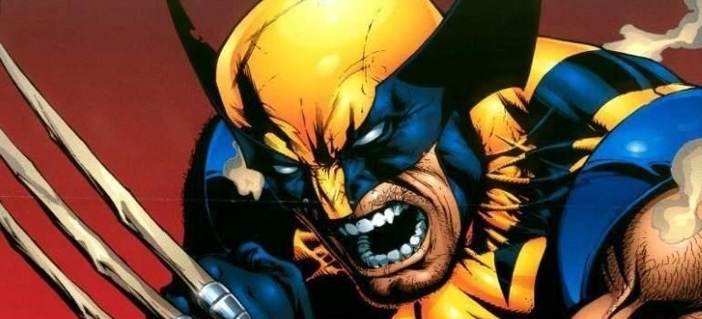
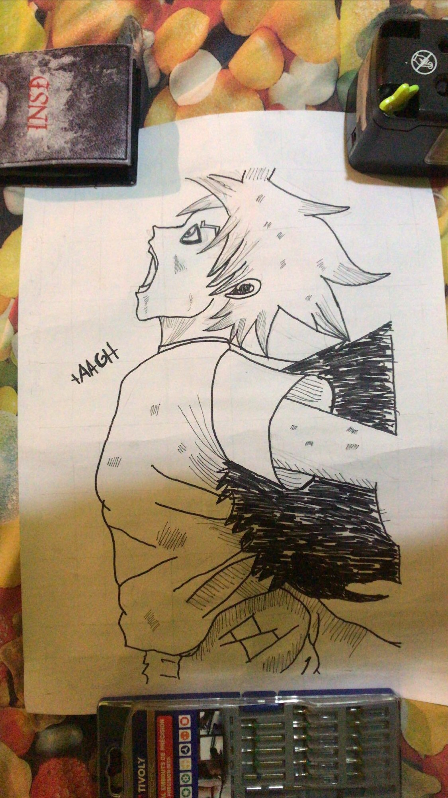

Holiwi
Lo siento si es algo fea la web, solo era para enseñarte esto :)
 
Este lo hice hace poco, está realizado sin cuadricula, a ojo. Primero lo hice a lapiz y luego lo subraye con un rotulador, el de la izquierda es la imagen que intente copiar.

Este lo hice hace poco, está realizado sin cuadricula, a ojo. Primero lo hice a lapiz y luego lo subraye con un rotulador, el de la izquierda es la imagen que intente copiar.


Este lo hice hace 2 años o así, está realizado con cuadricula. Primero le hice una al papel donde iba a dibujar y luego al papel donde tenía la fuente el de abajo es la imagen que intente copiar, no encontre la original SORRY :(.
 Este lo hice hace 2 años o así, está realizado con cuadricula. Primero le hice una al papel donde iba a dibujar y luego al papel donde tenía la fuente no tengo ni idea de quien es asi que no la pueod buscar, es como un naruto turbio.